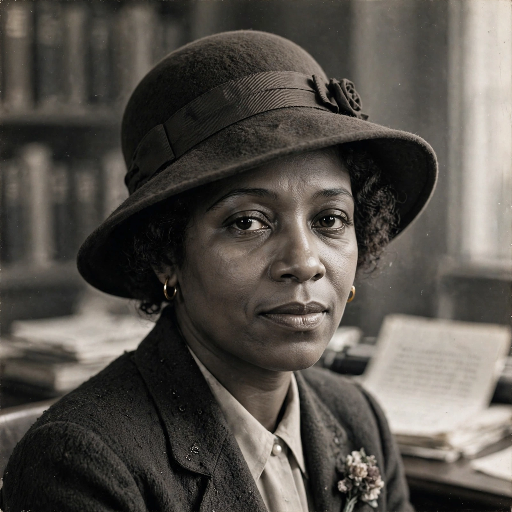

Zora Neale Hurston
| Zora Neale Hurston | |
 | |
| Born | January 7, 1891, Notasulga, Alabama, U.S. |
|---|---|
| Died | January 28, 1960 (aged 69), Fort Pierce, Florida, U.S. |
| Occupation | Author, anthropologist, filmmaker |
| Alma mater | Barnard College; Columbia University |
| Notable works | Their Eyes Were Watching God (1937); Mules and Men (1935) |
Zora Neale Hurston (January 7, 1891 – January 28, 1960) was an American writer, anthropologist and filmmaker. She portrayed racial struggles in the early-20th-century American South and published research on hoodoo and Caribbean Vodou. The most popular of her four novels is Their Eyes Were Watching God, published in 1937. She also wrote more than 50 short stories, plays and essays.
Life and career
Hurston grew up in Eatonville, Florida, one of the first all-Black incorporated towns in the United States, whose folk culture saturated her work. She studied at Morgan Academy and Howard University, where she co-founded the student newspaper, then moved to New York in 1925, becoming a central figure of the Harlem Renaissance alongside Langston Hughes and Wallace Thurman, with whom she published the magazine Fire!!. At Barnard College she studied anthropology under Franz Boas, graduating in 1928.
Her anthropological fieldwork in Florida, Louisiana, Jamaica and Haiti produced Mules and Men (1935), a landmark collection of African-American folklore, and Tell My Horse (1938), on Vodou. Her novel Their Eyes Were Watching God, the story of Janie Crawford's search for identity and voice, was initially criticised by some Black writers, including Richard Wright, for not addressing racial oppression directly.
Death and revival
Hurston died in poverty in a county welfare home in Fort Pierce, Florida, in 1960, and was buried in an unmarked grave. In 1975 Alice Walker's essay "In Search of Zora Neale Hurston" sparked a revival; Walker placed a headstone inscribed "A Genius of the South". Their Eyes Were Watching God is now among the most widely read American novels, and Hurston is recognised as a foremother of African-American and feminist literature.